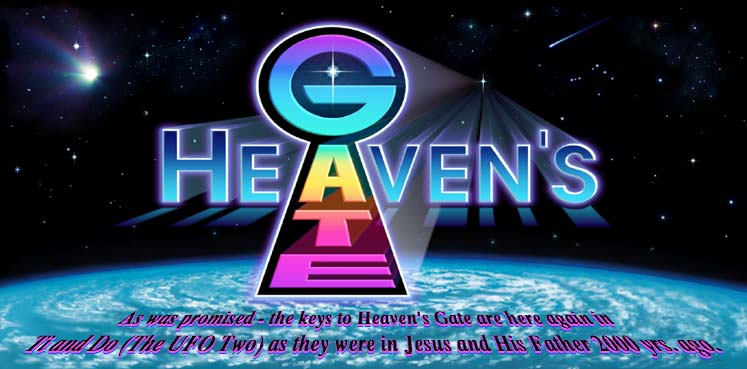

HALE-BOPP Brings Closure to: 
|
Whether Hale-Bopp has a "companion" or not is irrelevant from our perspective. However, its arrival is joyously very significant to us at "Heaven's Gate." The joy is that our Older Member in the Evolutionary Level Above Human (the "Kingdom of Heaven") has made it clear to us that Hale-Bopp's approach is the "marker" we've been waiting for -- the time for the arrival of the spacecraft from the Level Above Human to take us home to "Their World" -- in the literal Heavens. Our 22 years of classroom here on planet Earth is finally coming to conclusion -- "graduation" from the Human Evolutionary Level. We are happily prepared to leave "this world" and go with Ti's crew.
If you study the material on this website you will hopefully understand our joy and what our purpose here on Earth has been. You may even find your "boarding pass" to leave with us during this brief "window." We are so very thankful that we have been recipients of this opportunity to prepare for membership in Their Kingdom, and to experience Their boundless Caring and Nurturing. |


 If you would like to send for videotapes,
there is no charge. If you would like to copy them and
return the originals to us, we will make
them available to someone else. If you choose to assist
with deferring our expenses, those funds would be reinvested towards
getting this information out.
If you would like to send for videotapes,
there is no charge. If you would like to copy them and
return the originals to us, we will make
them available to someone else. If you choose to assist
with deferring our expenses, those funds would be reinvested towards
getting this information out.